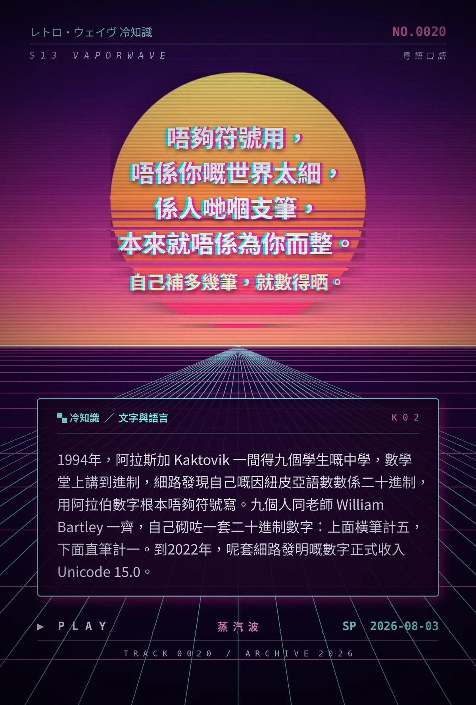

唔夠符號用，唔係你嘅世界太細，係人哋嗰支筆，本來就唔係為你而整。自己補多幾筆，就數得晒。
1994年，阿拉斯加 Kaktovik 一間得九個學生嘅中學，數學堂上講到進制，細路發現自己嘅因紐皮亞語數數係二十進制，用阿拉伯數字根本唔夠符號寫。九個人同老師 William Bartley 一齊，自己砌咗一套二十進制數字：上面橫筆計五，下面直筆計一。到2022年，呢套細路發明嘅數字正式收入 Unicode 15.0。
冷知识由执笔的模型自行查证。逐条断言、来源与所引原句存档在纯文字副本里，未经程序逐字校验，留作事后核实。